1 Overview of Unix
1.1 Types of OSs
Batch (finished 1 task do another)
Single CPU
Bad: Speed
Time-Sharing (for interaction application, and result will be get after all tasks finished)
Multiple users connected to a single CPU
Many user terminals
Multiple tasks run simultaneously using time-sharing, giving users the feeling of having multiple dedicated CPUs running in parallel.
Parallel (super computer) [并行系统]
Multiple CPUs closely coupled to form one computer
Higher throughput and better fault tolerance
Each CPU can be running batch tasking or time-sharing multitasking
Bad: Expensive (lose a lot when not use)
Distributed (cloud computing) [分散式系统]
Multiple CPUs loosed coupled via networking
Real-Time (have ddl to catch) [实时系统]
Very strict response time requirements
Periodical tasks, every job of a task has a strict deadline
2 Features
predictability
determinism
1.2 Two kind of Systems
Single Tasking System
Each task, once started, executes to its very end without any interruption from other tasks
Simple to implement: sequential boundaries between tasks, and resource accesses.
Few security risks
Poor utilization of the CPU and other resources
Example
MS-DOS
Multitasking System
Very complex
Serious security issues
How to protect one task from another, which shares
the same block of memory
Much higher utilization of system resources
Support interactive user/physical-world interface
Example
Unix
Liunx
Windows NT
1.3 Unix
Unix Family Tree

The Unix Philosophy
Modular design
A collection of simple tools, with limited well-defined functions
File system
Inter-process communication
The tools can be easily composed (via >, >>, <, I, " by a shell to accomplish complex tasks
The Composition of UNIX (3 layers)
layer 1:
hardware
layer 2: Kernel mode
Kernel
System call to hardware
Can access the hardware resources
layer 3: User Mode
Shell (like a open window, user can use shell to interact with system)
ls (list file)
vi (editing file)
gcc (compiler file)
Other user level applications and libraries (e.g. cat, grep, ...)
Features for Unix
Portability
Multiuser Operation
Multitask Processing
Hierarchical File System
Tree-link structure
Powerful Shell
Pipes
Networking
Robustness
2 Unix Processes
2.1 Process
State of an execution e at clock tick i:
s(e, i) = (resources used by e at i, state of the resources used by e at i).
A process is the time sequence of {s(e, i)}, where every two consecutive states s(e, j) and s(e, j+ 1) have causal relationship determined by the program logic and the OS.
Notion of threads (lightweight processes)
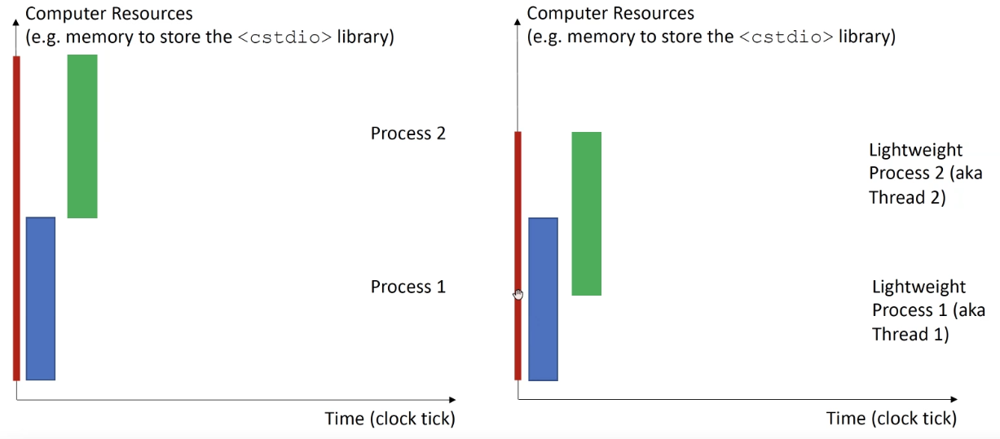
Process Image
Common process management meta info
Process ID
Parent process ID
User process ID
Unix Processes: commands to list these management meta info
psps -aps -lUnix Processes: related Portable OS Interface (POSIX) APIs
Get pid ppid aid
xvoid main() {printf("Process ID = %ld.\n", (long) getpid());printf("Parent Process ID = %ld.\n", (long) getppid());printf("User ID = %ld.\n", (long) getuid());}Fork a process
xxxxxxxxxxvoid main(void){int ret_from_fork, mypid;mypid = getpid();printf("Before: my pid is %d\n", mypid);ret_from_fork = fork();sleep(1);printf("After: my pid is %d, fork() said %d\n", getpid(), ret_from_fork);}xxxxxxxxxxvoid main(void) {int i, n = 4;pid_t childpid;for (i = 1; i < n; ++i)if (childpid = fork())break;printf("This is process %ld with parent %ld, i = %d. \n", (long)getpid(), (long)getppid(), i);}xxxxxxxxxxvoid main(void) {int i, n = 4;pid_t childpid;for (i = 1; i < n; ++i)if ((childpid = fork()) <= 0)break;printf("This is process %ld with parent %ld, i = %d. \n", (long)getpid(), (long)getppid(), i);}xxxxxxxxxxvoid main(void) {int i, n = 4, status;pid_t childpid, waitreturn;for (i = 1; i < n; ++i)if (childpid = fork())break; // parent breakswhile (childpid != (waitreturn = wait(&status)))if ((waitreturn == -1) && (errno != EINTR))break;printf("This is process %ld with parent %ld, i = %d. \n", (long)getpid(), (long)getppid(), i);}
exec if success, will not return
xxxxxxxxxxvoid main(void){int status;pid_t childpid;if ((childpid = fork()) == -1){perror("Error in the fork");exit(-1);} else if (childpid == 0){/* child code */if (execl("/user/bin/ls", "ls", "-l", "-t", "-a", NULL) < 0){perror("Exec of ls failed");exit(-1);}} else {/* parent code */if (childpid != wait(&status)) {perror("A signal occurred before child exited");printf("Status from wait is %d.\n", (int)WEXITSTATUS(status));exit(-1);}printf("Status from wait is %d. In", (int)WEXITSTATUS(status));}exit(0);}xxxxxxxxxxvoid main(void){int status;pid_t childpid;char *argv[3];argv[0] = "ls";argv[1] = "-l";argv[2] = 0; //NULL pointerif ((childpid = fork()) == -1) {perror("Error in the fork");exit(1);} else if (childpid == 0) {/* child code */if (execvp("ls", argv) < 0){perror("Exec of ls failed");exit(1);}} else if (childpid != wait(&status)) {/* parent code */perror("A signal occurred before child exited");}exit(0);}xxxxxxxxxxint execl(char const *path, char cont *arg0, …);int execle(char const *path, char const *arg0, …, char const *envp[]);int execlp(char const *file, char const *arg0, …);int execv(char const *path, char const *argv[]);int execve(char const *path, char const *argv[], char const *envp[]);int execvp(char const *file, char const *argv[]);
Unix Processes: background processes
Unix Processes: daemons
A daemon is a background process that normally runs indefinitely (have an infinite loop).
background processes daemons Use command to create a child process Create a process by it self Close Termial / ctrl-c Use kill -9 command to kill process Daemons Process Demo
xxxxxxxxxx
void main (void) { pid_t pid, sid; FILE* p_output; int i = 0; pid = fork();
if (pid < 0) exit(EXIT_FAILURE); if (pid > 0) exit(EXIT_SUCCESS);
umask(0); sid = setsid();
if (sid < 0) exit(EXIT_FAILURE); if ((chdir(".")) < 0) exit(EXIT_FAILURE);
close(STDIN_FILENO); close(STDOUT_FILENO); close(STDERR_FILENO);
while(1) { if ((p_output = fopen("daemon_output.txt", "a")) != NULL) { fprintf(p_output, "%d\n", i++); i %= MAX_I; fclose(p_output); } sleep(3); }
exit(EXIT_SUCCESS);}
3 Unix File System
3.1 Unix File System
File system provides abstractions of naming, storage, and access of files.
How to handle devices?
System calls
handled by device drivers
Unix provides a uniform device interface
Types of files in Unix
Regular file
Special file
Block Special file (e.g. disk, CD)
Character Special file (e.g. Printer, Keyboard)
FIFO Special file (e.g. Pipe)
Directories file
Difference between regular and directory file
regular FILe directory file Contents Data File Operations what can be done who can do them The ls -l Command
First char file type - normal file d directory l symbolic link p named pipe b block device c character device s socket permission on a file on a directory r (read) cat ls w (write) vi touch x (execute) execute the file cd What are the differences between a regular file and a device file?
xxxxxxxxxxcp /etc/passwd /tmp/garbage## the content of passwd regular file will be print outcp /etc/passwd /dev/tty
3.2 Hierarchical file organization
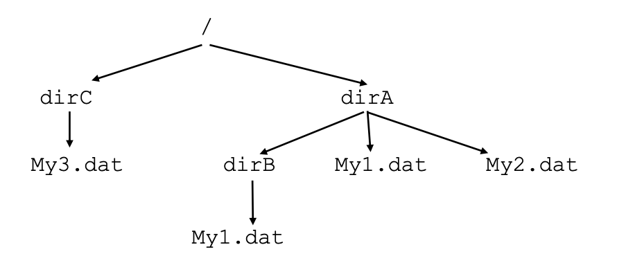
fully-qualified pathname
pwd Command - current working directory
Current Working Directory
xxxxxxxxxxchar *getcwd(char *buf, size_t size)// return is a C Stringxxxxxxxxxxint main() {char cwd[1024];if (getcwd(cwd, sizeof(cwd)) != NULL) {printf("Current working dir: %s\n", cwd);} else {perror("getcwd() error");}return 0;}File representation
Unix uses a logical structure called i-node to store the information about a file on disk
each file in a file system is represented by an i-node
i-node
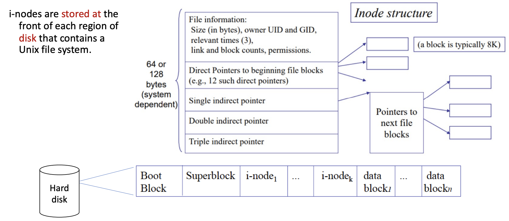
link --- <name, i-node> pair
Hard Link
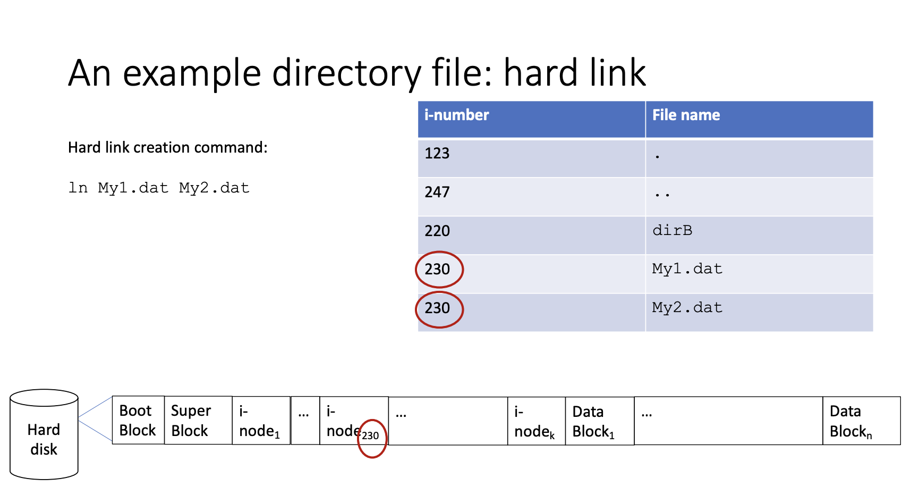
symbolic link (a unique file)
xxxxxxxxxxln –s My1.dat My1SymLink.dat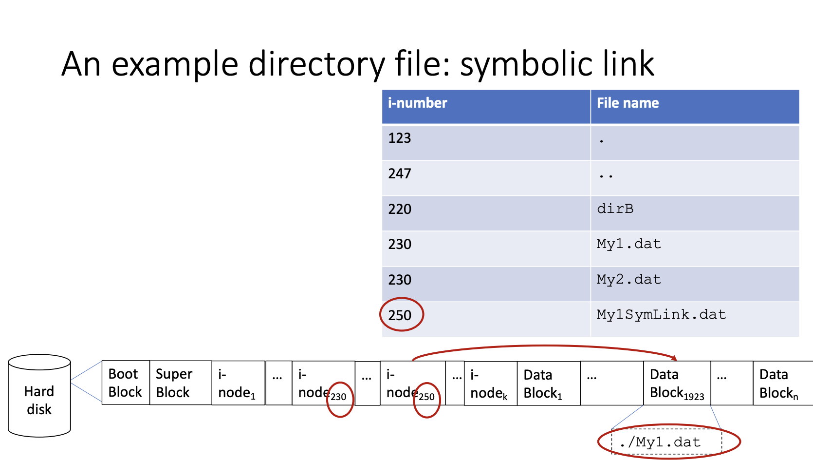
Hard Link vs Symbolic Link
Hard Link Symbolic Link Same File System Can Cross File Systems Move the Link File to other Same content with the main file Use absoult path: Same content with the main file, Use Relative Path: No such file Can point at any target Can require special support from file system walking tools. Name resolution is a function to convert a pathname to an i-node number
3.3 File Descriptors (File Pointers)
File System Call
Unix file system calls
open, read, write, close, ioctl
ANSI C I/O library uses file pointers
fopen, fscanf, fprintf, fread, fwrite, fclose, ...
File Descriptors
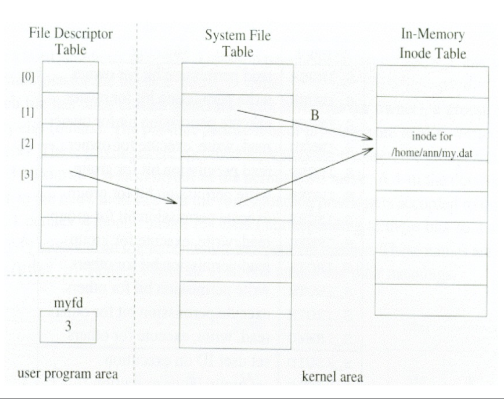
SFT entry contains information about whether a file is opened for read/write, permission, lock, read/write offset etc.
Several entries in SFT may point to the same physical file
Three files are opened automatically
STDIN_FILENO -> standard input
STDOUT_FILENO -> standard output
STDERR_FILENO -> standard error
File descriptor: open a file
xxxxxxxxxxint open(const char* pathname, int flags)int open(const char* pathname, int flags, mode_t mode)Open a file
pathname
flags
O_CREAT
O_APPEND
Error
return -1
Example
xxxxxxxxxxint fd = open("someFile", O_RDONLY);
File descriptor: read a file (MAX: 256 btyes)
xxxxxxxxxxbytes = read(fd, buffer, count)Read
fd
buffer
count
Error
return -1
Example
xxxxxxxxxxint fd = open("someFile", O_RDONLY);char buffer[4];int bytes = read(fd, buffer, 4*sizeof(char));
File descriptor: write a file
xxxxxxxxxxbytes = write(fd, buffer, count)Write
fd
buffer
count
Error
return -1
Mode
O_WRONLY
O_CREAT
O_APPEND
Example
xxxxxxxxxxint fd = open("someFile", O_WRONLY|O_CREAT, 0644);char buffer[4];int bytes = write(fd, buffer, 4*sizeof(char));
File descriptor: close a file
xxxxxxxxxxreturn_val = close(fd)Return
Return 0 on success, -1 on error
File pointers
File pointer and FILE
fopen()
xxxxxxxxxxFILE *file_stream = fopen(path, mode)Mode
r / r+
w / w+
a / a+
printf()
xxxxxxxxxxprintf(formatted_string, ...)Escaping variable types
%d,%i – decimal integer
%u – unsigned decimal integer
%o – unsigned octal integer
%x,%X – unsigned hexadecimal integer
%c – character
%s – string or character array
%f – float
%e,%E – double (scientific notation)
%g,%G – double or float
%% – outputs a % character
scanf()
xxxxxxxxxxscanf(formatted_string, ...)Example
xxxxxxxxxxscanf(” %d %c %s", &int_var, &char_var,string_var);
fclose()
xxxxxxxxxxfclose(file_stream)
I / O Redirection
I/O redirection realization using dup()
xxxxxxxxxxint dup(int oldfd)
Communication between parent/child via pipe
System call pipe() returns two file descriptors by which we can access the input/output of a pipe (an I/O mechanism)
xxxxxxxxxxint fd[2];int pipe(int fd[2]);// Return: 0 success; -1 errorxxxxxxxxxxint main(){int fd[2];pipe(fd); //fd[0] is for read and fd[1] is for writepid_t child = fork();if (child == 0){ //child processclose(fd[1]);char data[100]; //a large enough buffer to share dataread(fd[0], data, sizeof(data));printf("%s\n", data);close(fd[0]);}else{ //parent processclose(fd[0]);char* data = "hello world";write(fd[1], data, strlen(data)+1);close(fd[1]);}return 0;}
4 Introduction to Device Drivers
4.1 Device driver
Device driver is a special kind of library, which can be loaded into the OS kernel, and links application program with the I/O devices
File subsystem & char/block device driver tables
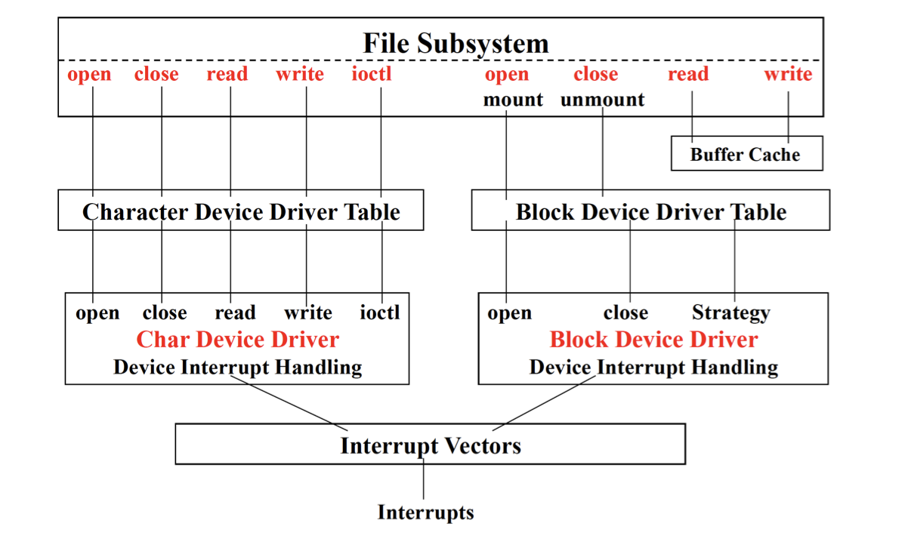
Char/block device driver tables
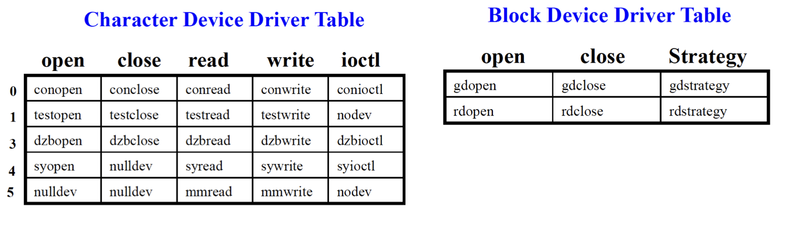
Major Number
The index (id) of a device driver in char/block device driver tables.
Minor Number
A number is used inside a device driver, e.g., one driver may control many devices then minor number can be used to distinguish them.
Advantages to separate device drivers from the OS
OS designers
Devices may not be available when an OS is designed
Do not need to worry about how to operate devices
Focus on OS itself by providing a generic interface for device driver development.
Device driver designers
Do not need to worry about how I/O is managed in OS
Focus on implementing functions of devices with device-related commands following the generic I/O interface
Devices and Files
Character/Block Device Files
Types of Device Drivers
Block
Character
Network
Block Device Drivers
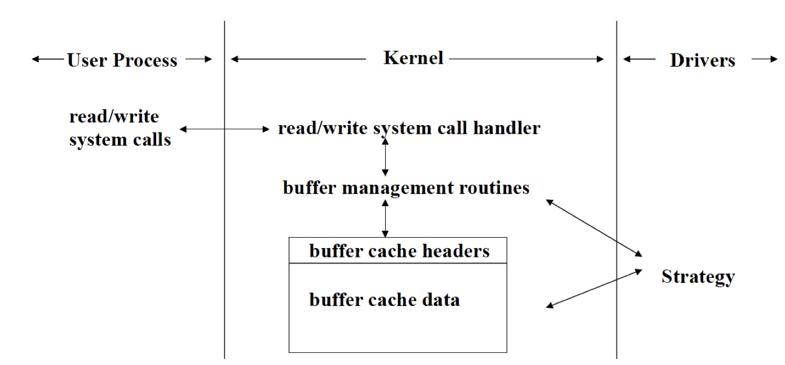
OS manages a buffer cache; satisfy user requests for data by accessing buffers in the cache
Driver is invoked when requested data is not in the cache
FIFO in buffer
Character Device Drivers
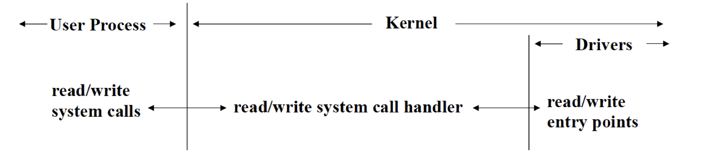
Can handle I/O requests of arbitrary size
Differences
Block driver character driver only interacts with buffer cache directly interacts with user requests from user processes
5 Character Device Drivers (I)
5.1 Device Driver Development
The Interface for User Programs
Each device driver has a major number
When we create a special file by associate its major number (driver) with an inode
Example
xxxxxxxxxxmknod /dev/lab1 c 251 0
The Device Driver Development (Kernel)
The Generic Interface for Char Device Driver in Linux
A data structure called file_operations is defined in <linux/fs.h> . It is basically an array of function pointers
Example
xxxxxxxxxxstruct file_operations{struct module * owner;...int (*open)(struct inode *, struct file *);ssize_t (*read)(struct file *, char *, size_t, loff_t *);ssize_t (*write)(struct file *, const char *, size_t, loff_t *);int (*release)(struct inode *, struct file *);...}
"Hello World" Device Driver
xxxxxxxxxx// Driver Name// Max number of devices using this driver// Start of the minor number// the massage want to sendstatic char msg[] = "Hello World!";/*Variable: devno - Store Major Number & Minor NumberData Type: dev_t data typedev_t Data Type: __u32 (unsigned 32 bits int)*/static dev_t devno;static int major;static struct cdev dev_profile;static int open_impl(struct inode *p_inode, struct file *p_file) {printk("Driver " DRIVER_NAME " open.\n");return 0;}static int read_impl(struct file *p_file, char __user *p_buf, size_t size, loff_t *p_loff) {int num;int ret;if (size < strlen(msg) + 1)num = size;elsenum = strlen(msg) + 1;ret = copy_to_user(p_buf, msg, num);if (ret) {printk("Fall to copy data from the kernel space to the user space!\n");return 0;}return num;}static int release_impl(struct inode *p_inode, struct file *p_file) {printk("Driver " DRIVER_NAME " closed.\n");return 0;}static struct file_operations fops = {owner: THIS_MODULE,open: open_impl,read: read_impl,release: release_impl,};static int __init helloworld_char_driver_init(void) {int ret;/*Linux Kernel Function: alloc_chrdev_region() - register a range of char device numbers*/ret = alloc_chrdev_region(&devno, S_N, N_D, DRIVER_NAME);if (ret < 0) {printk("Driver " DRIVER_NAME " cannot get major number.\n");return ret;}// get the major numbermajor = MAJOR(devno);printk("Driver " DRIVER_NAME " initialized (Major number %d).\n", major);/*register a char drivercdev_add() - report the device driver to kernel*/cdev_init(&dev_profile, &fops);dev_profile.owner = THIS_MODULE;dev_profile.ops = &fops;ret = cdev_add(&dev_profile, devno, N_D);if (ret) {printk("Driver " DRIVER_NAME " register fail.\n");return ret;}return 0;}static void __exit helloworld_char_driver_exit(void) {/*delete the dev_profile from registercdev_del()*/cdev_del(&dev_profile);unregister_chrdev_region(devno, N_D);printk("Driver " DRIVER_NAME " register fail.\n");}module_init(helloworld_char_driver_init);module_exit(helloworld_char_driver_exit);/*Module Introduce*/MODULE_LICENSE("GPL");MODULE_AUTHOR("David Jiang <guanlin.jiang@connect.polyu.hk>");MODULE_DESCRIPTION("Hello world character device driver");Client Side Testing
xxxxxxxxxxvoid main() {int fd;int count;char buf[256];fd = open("", O_RDONLY);if (fd == -1) {printf("Fail to open the device file!\n");return -1;}count = read(fd, buf, 256 - 1);printf("User: %d characters are read from the kernel space.\n", count);buf[count] = 0;printf("User: the string is \"s\".\n", buf);close(fd);return 0;}
Usage
xxxxxxxxxx## MakeFile (under /driver/char)obj-$(CONFIG_HELLOWORLD) += helloworld_char_driver.oxxxxxxxxxx## Kconfig (under /driver/char)config HELLOWORLD tristate "HELLOWORLD" depends on CPU_S5PV210xxxxxxxxxx## Compile Systemvim MakeFilevim Kconfigmake menuconfig
## Embedded System Boardmount -t nfs 192.168.1.1:/home/comp3438/arm-board /mnt/nfs -o nolockls *.kolsmodinsmod helloworld_char_driver.kolsmodcat /proc/devicesmknod /dev/comp3438helloworld_dev_file c 250 1
## Compile Systemarm-linux-gcc comp3438helloworld_user.c
## Embedded System Board./a.out6 Compiler Design
Programming Language
Low-level
Machine Language
Everything is a binary number: operations, data, addresses, …
Example
xxxxxxxxxx0010 0100 1010 0110 0000 0000 0000 0100
Assembly Language
Symbolic representations/mnemonics of machine language
Example
xxxxxxxxxxadd $t6, $t5, 4
High-level
Benefits
More human-readable
Hide unnecessary details
Make programs more robust
Make programs more portable
Translators
Translation Mechanisms
Development time translation: Compilation
Example: C, C++
Runtime translation: Interpretation
Example: Shell, Perl, JS
Hybrid: Compilation + Interpretation
Example: Java
Comparisons of Compiler/Interpreter
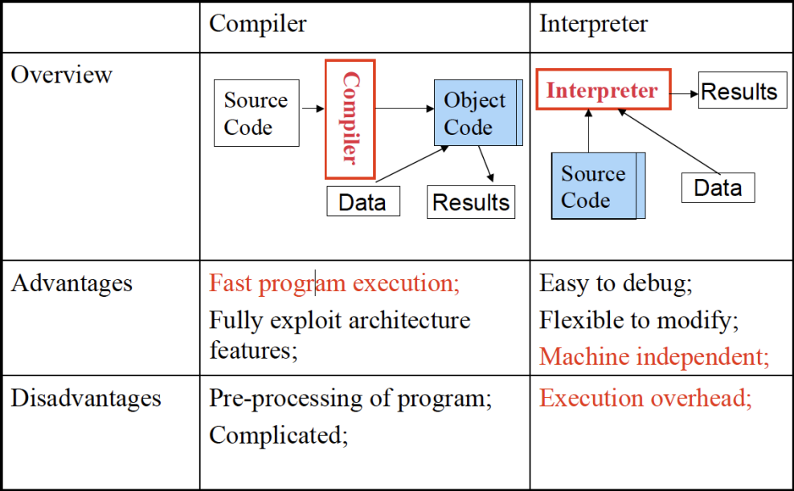
What is a compiler?
A compiler is a software that takes a program written in one language (called the source language) and translates it into another (usually equivalent) program in another language
It also reports errors (bugs) in the source program.
Phases of a Compilation
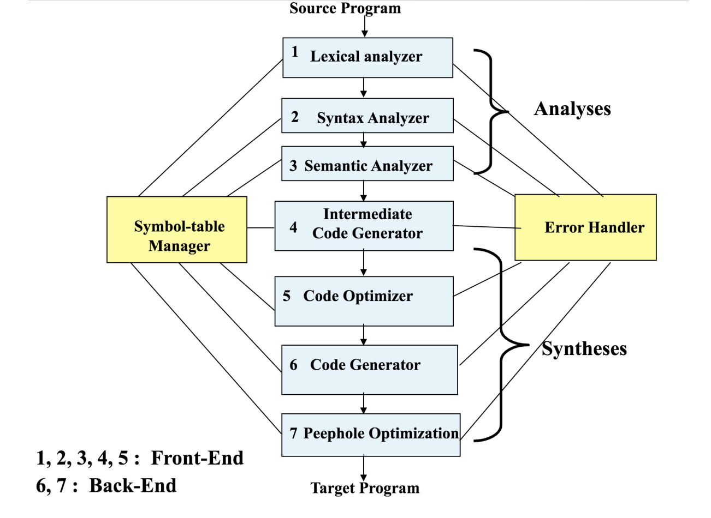
Lexical Analysis
Scan the source program and group sequences of characters into tokens.
A token is the smallest element of a language
A group of characters
The sub-module of the compiler that performs lexical analysis is called a lexical analyzer
Finite State Automata
NFA (Nondeterministic Finite Automata)
DFA (Deterministic Finite Automata)
Example
xxxxxxxxxxposition := initial + rate * 60value token type position ID := Operator initial ID + Operator rate ID 8 Operator 60 ID
Syntax Analysis
Once the tokens are identified, syntax analysis groups sequences of tokens into language constructs
The sub-module of the compiler that performs syntax analysis is called the parser/syntax analyzer
Syntax (Parse) Tree
Result of syntax analysis is recorded in a hierarchical structure called a syntax tree.
Semantic Analysis
Put semantic meaning into the syntax tree
syntax analysis recognizes grammatical events
Example
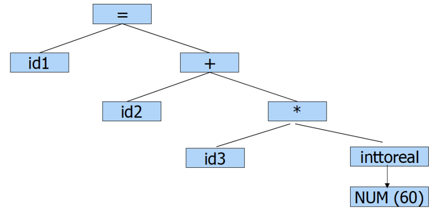
Intermediate Code Generation
Generate IR (Intermediate Representation) code
Easier to generate machine code from IR code.
Example
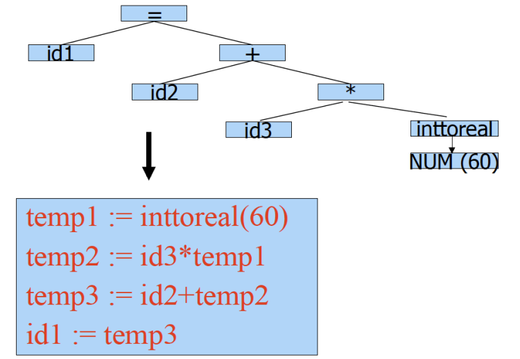
Code Optimization
Modify program representation so that program can run faster, use less memory, power, etc.
Example
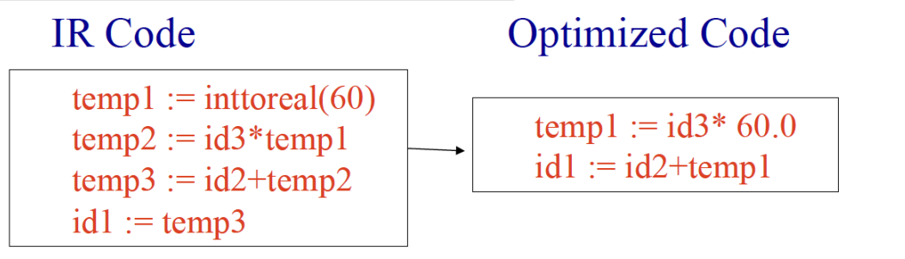
Code Generation
Generate the target program.
Example
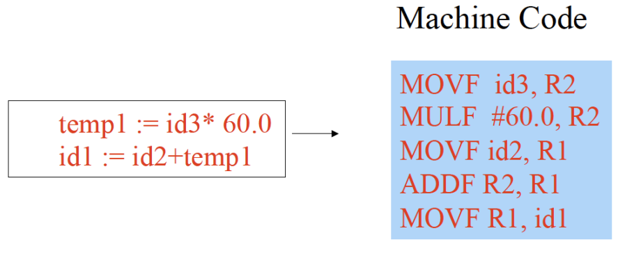
Symbol Table Management
Collect and maintain information about ID
Information is added and used by all phases
Debuggers use symbol table too
Distinction between Phases and Passes
Passes
the times going through a program representation
Phases
conceptual stages, or modules of the compiler
Compiler Tools
phases Tools Lexical Analysis lex, flex Syntax Analysis yacc, bison Semantic Analysis Intermediate Code Code Optimization Code Generation
7 Lexical Analysis
7.1 Part I: Introduction to Lexical Analysis
How to recognize tokens
two methods Regular Expression ---> Lex (software tool)
Regular Expression ---> Finite Automata
Example
xxxxxxxxxxif (i == j)z = 0;elsez = 1;xxxxxxxxxxif (i == j)\n\tz = 0;\nelse\n\tz = 1;token value (Lexeme) keyword if ID i Operator == ... ... Token
A syntactic category
Example: Expression (input and output)
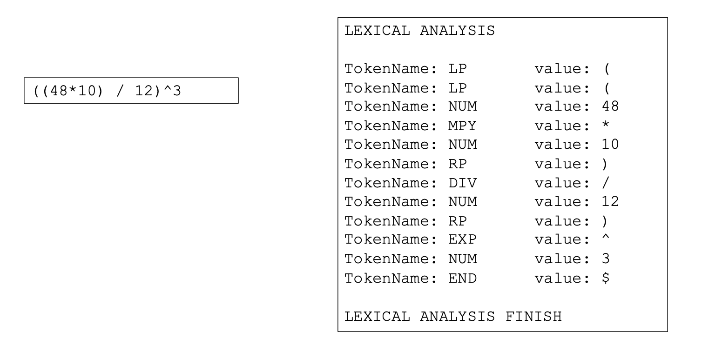
What are tokens for?
Classify program substrings according to their syntactic role
Tokens are the input to the parser (Syntax Analysis)
Parser relies on token distinctions
How to recognize tokens (lexical analyzer)?
Regular Expressions
7.2 Part II: Regular Expression
Outline
Alphabet, Strings, Languages
Regular Expression
Regular Set (Regular Language)
Specifying tokens
A token is specified by a pattern
a set of rules that describe the formation of the token
Example:
A1, B1 (ok)
1A (no)
A regular set (regular language) is the set of strings generated by a regular expression over an alphabet.
Alphabet and Strings
Kleene Closure and Language
Operations on languages
Particularly union, concatenation, Kleene closure, and positive closure
Given two languages L and M
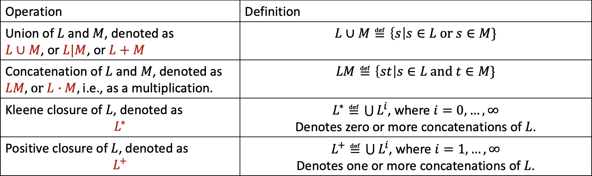
Precedence
Kleene closure ≻ concatenation ≻ union
Example: { 1 } | { 2 } { 3 } *
Exponentiation (concatenating the same language) ≻ multiplication (concatenating different/same languages) ≻ addition (union)
Example: { 1 } + { 2 } · { 3 }^2
Example
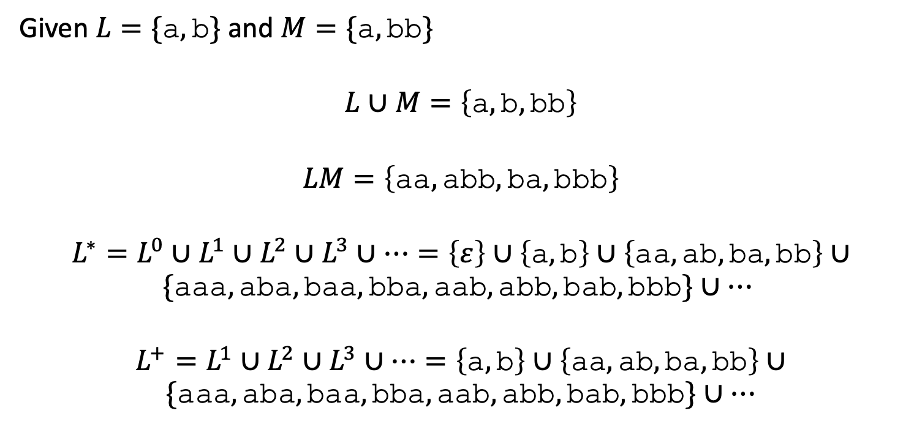
Examples of regular expressions
Let Σ = {a, b}, then
regular expression a|b denotes language {a, b}
regular expression a|b (a|b) denotes language {aa, ab, ba, bb}, i.e. the set of all strings of as and bs of length two
regular expression a ∗ denotes the set all strings of zero or more as, i.e. {ε, a, aa, aaa, … }
regular expression (a|b)∗ denotes the set of all strings containing zero or more instances of an a or b
i.e., the set of all strings of as and bs
regular expression a|a ∗b denotes the set containing the string a and all strings consisting of zero or more as followed by a b
Notation Shorthands
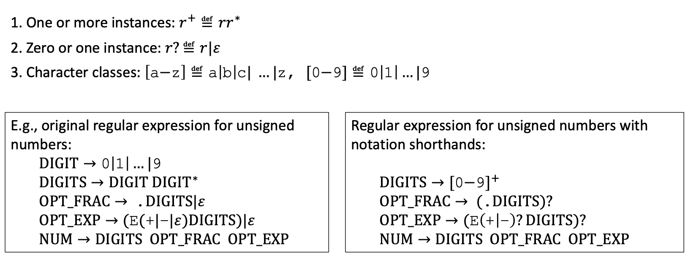
Recognize tokens
Example
suppose Σ = {a, b}, then a|b is a regular expression. String aa ∉ L(a|b) String a ∈ L(a|b)
7.3 Part III: Finite Automata
NFA, DFA, and NFA ---> DFA Conversion
Recognizing Tokens
Regular Expression ---> Specify tokens
Finite Automaton ---> Recognize tokens
Nondeterministic Finite Automata (NFA)
5 components
∑: input alphabet
S: the set of states
s0: the start state
F ⊆ S: the set of accepting states
move: the transition function that maps state-symbol pairs to sets of states
Transition Graphs (graphical representation of an NFA)
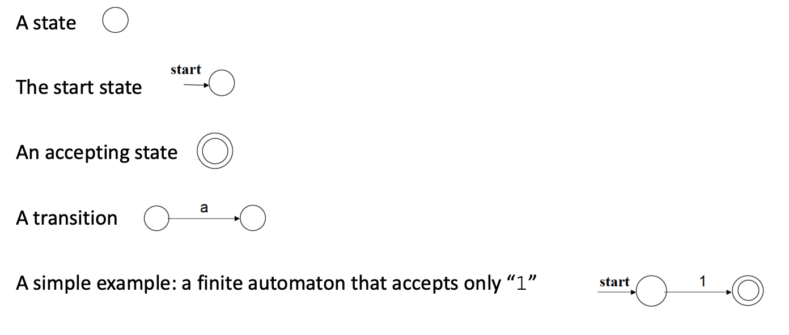
Examples

Regular Expression:
1**(*) 0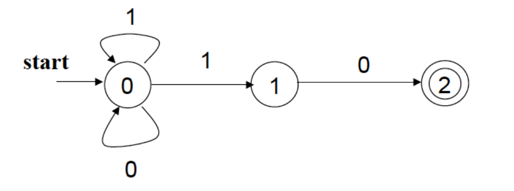
Regular Expression:
(1 | 0)**(*) 10
State Transition Table
The transition function of an NFA can also be implemented by a transition table, where the entries of rows are states and columns, respectively
Example
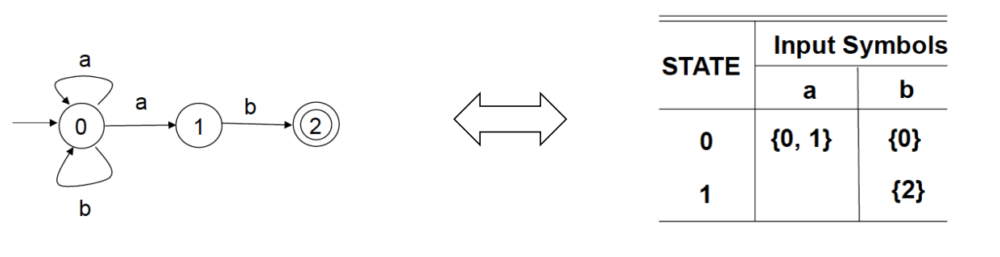
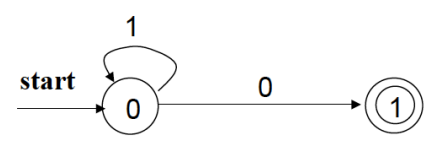
state Input: 0 Input: 1 q0 q1 q0 q1
ε-Transition
RE -> ε NFA -> NFA -> DFA
Another kind of transition, where the automaton transits from one state to another state without reading any input.
Example
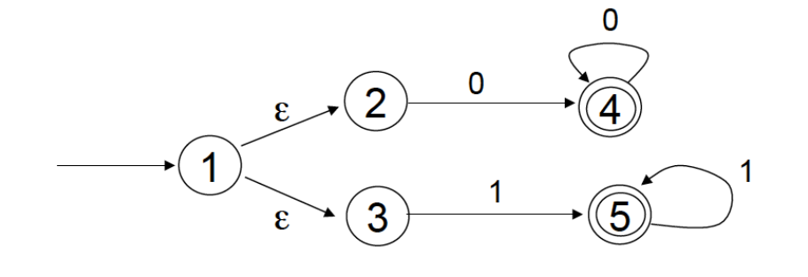
Regular Expression:
00**(*) | 11**(*)
NFA based recognitions (only on paper)
Can have multiple transitions from one input in a given state
Can have ε-transitions
Easy to form from regular expressions
Problem
Hard to implement the recognition (decision) algorithm
Solution
Deterministic Finite Automata (DFA)
Deterministic Finite Automata
A DFA is a special case of NFA
One transition per input per state
No ε-transitions
Table Implementation of DFA
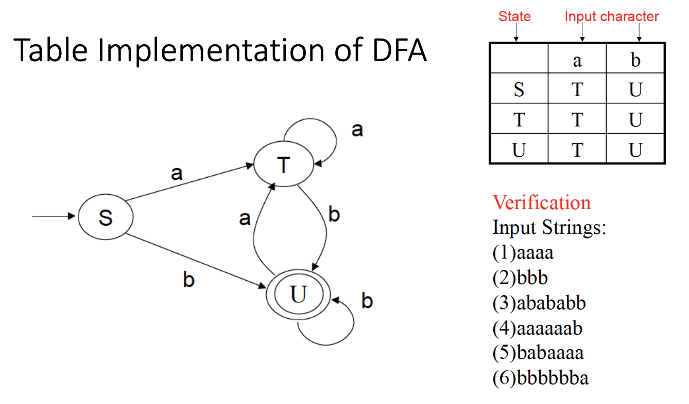
Can not Verified: 1, 5, 6 (becasue not back to final U)
Regular Expression to NFA
Example
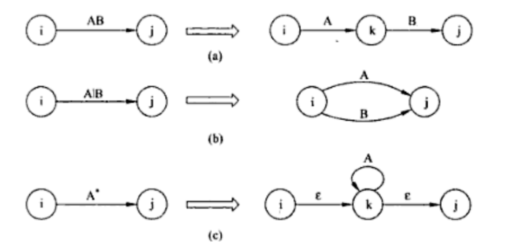
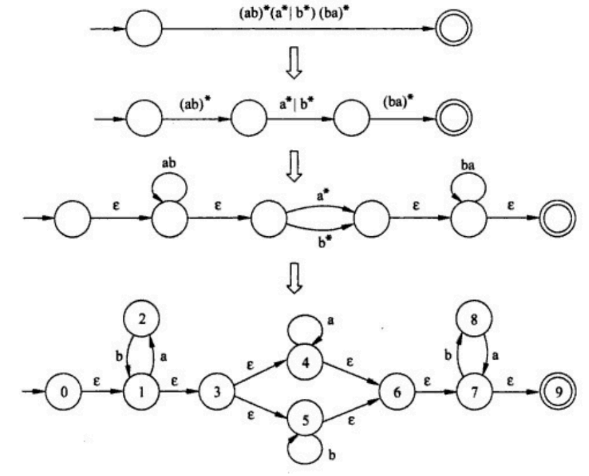
NFA to DFA
The conversion of an NFA to a DFA needs to meet the two requirements on DFA
ε-closure(s): the set of all states reachable from ε on ε-transition
Regard all reachable states from one state on one input symbol as one state
8 Syntax Analysis
8.1 Part I: Syntax Analysis
Parsing
Example
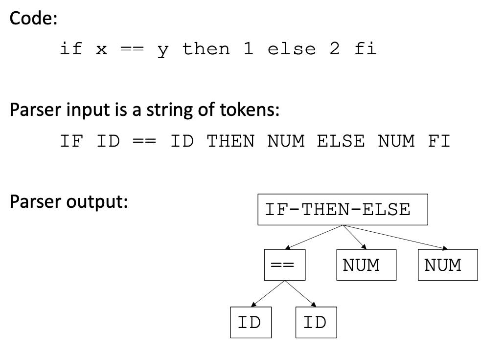
Syntax and Grammar
The syntax of programming language constructs can be described by context-free grammar (CFG)
Context-Free Grammar (CFG)
A context-free grammar G = (N, T, S, P)
N: a finite set of nonterminal symbols
T: a finite set of terminal symbols
S: the unique start nonterminal
P: a finite set of productions
Language Classification
Recurisve Langugae
Context-sensitive Language
Context-free Language
Regular Set
Regular Expression vs. CFG
Every language that can be described by a regular expression can also be described by a CFG
Derivations, Language of a CFG
Parse Tree, Leftmost/Rightmost Derivation
Leftmost derivation
only the leftmost nonterminal is replaced at each derivation step
Bottom-Up Parsing
Shift-reduce Parser
Shift
Reduce
Accept
Error
Top-Down Parsing
Only work for certain class of grammars
Unambiguous
No left recursion
No left factoring
Left recursion
Left factoring
Recursive Production and Grammar
Recursive Production
if the same non-terminal at both left and right hand side of production
S -> aSb
S -> aS
S -> Sa
Recursive Grammar
if at least one recursive production is present
S -> aS / a
S -> Sa / a
S -> aSb / ab
Ambiguous Grammars
Non-deterministic Grammar
The grammar with common prefix is known as Non-Deterministic Grammar
A > aß1 / aß2
Normalization of CFG
The Grammar G is said to be in Chomsky Normal Form (CNF), if every production is in form
A -> BC/a
9 LL Parser, Code optimization/generation and Revision
Rule 1
For a production rule X → ∈, First(X) = { ∈ }
Rule 2
For any terminal symbol ‘a’, First(a) = { a }
Rule 3
For a production rule X → Y1Y2Y3,
Calculating First(X)
If ∈ ∉ First(Y1), then First(X) = First(Y1)
If ∈ ∈ First(Y1), then First(X) = { First(Y1) – ∈ } ∪ First(Y2Y3)
Calculating First(Y2Y3)
If ∈ ∉ First(Y2), then First(Y2Y3) = First(Y2)
If ∈ ∈ First(Y2), then First(Y2Y3) = { First(Y2) – ∈ } ∪ First(Y3)
Similarly, we can make expansion for any production rule X → Y1Y2Y3…..Yn.
First Function
Examples
S → a/b/ε
First (S) = {a ,b, Null}
S → aA/bB, A → ε, B → ε
First (S) = {a, b}
First (A) = {Null}
First (B) = {Null}
S → AaB/BA, A → a/b, B → d/e
First(S) = {a, b, d, e}
First(A) = {a, b}
First(B) = {d, e}
S → AaB, A → b/ε, B → с
First(S) = {a, b}
First(A) = {b, null}
First(B) = {c}
Follow Function
S → aA, A → bA/ε
Follow(S) = {$}
Follow(A) = {$}
First and Follow Functions
S → aBDh B → cC C → bC/E D → EF E → g/ε F → f/ε
First Function
First(S) = { a }
First(B) = { c }
First(C) = { b , ε }
First(D) = { g, f, ε }
First(E) = { g , ε }
First(F) = { f, ε }
Follow Function
Follow(S) ={ $ }
Follow(B) = { First(D) - ε } u First(h) = { g , f, h }
Follow(C) = Follow(B) = { g, f, h}
Follow(D) = First(h) = { h }
Follow(E) = { First(F) - ε } u Follow(D) = { f, h }
Follow(F) = Follow(D) ={ h}
Algorithm to construct LL(1) Parsing Table
Step 1: First check all the essential conditions and go to step 2.
Step 2: Calculate First() and Follow() for all non-terminals.
Step 3: For each production A –> α. (A tends to alpha) 1.Find First(α) and for each terminal in First(α), make entry A –> α in the table. 2.If First(α) contains ε (epsilon) as terminal, then find the Follow(A) and for each terminal in Follow(A), make entry A –> ε in the table. 3.If the First(α) contains ε and Follow(A) contains $ as terminal, then make entry A –> ε in the table for the $. To construct the parsing table, we have two functions:
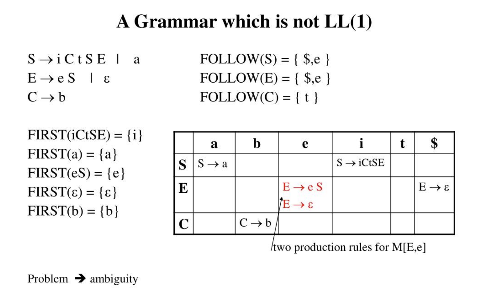